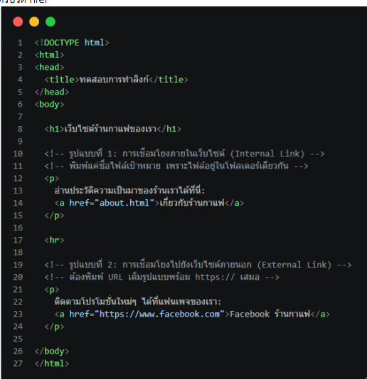
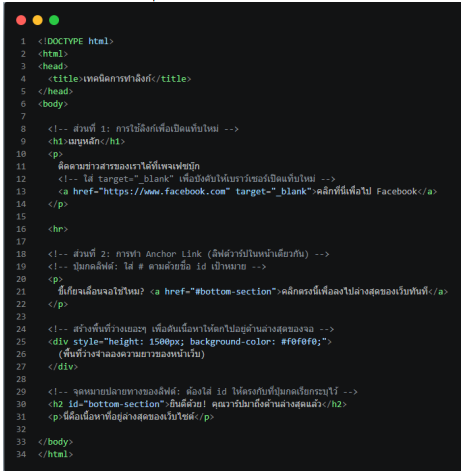
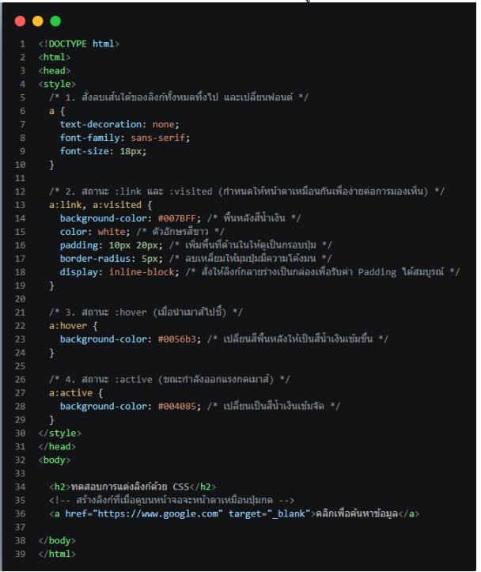

1. พื้นฐานการทำลิงก์
- แท็ก <a> (Anchor): เครื่องมือหลักในการสร้างลิงก์เชื่อมโยง ต้องใช้คู่กับแอตทริบิวต์
hrefเสมอ เพื่อระบุปลายทางที่ต้องการพาผู้ใช้ไป (p. 3) - การเชื่อมโยงภายในเว็บไซต์: ใช้ Relative Path พิมพ์ชื่อไฟล์เป้าหมายลงใน
hrefโดยตรง เช่น<a href="about.html">เหมาะกับการทำเมนูนำทางในเว็บเดียวกัน (p. 3) - การเชื่อมโยงภายนอก (External Link): ใช้ Absolute Path คือ URL เต็มรูปแบบที่ต้องขึ้นต้นด้วย
http://หรือhttps://เสมอ เช่น<a href="https://www.facebook.com">(p. 4)

2. เทคนิคการเชื่อมโยง
- target="_blank": สั่งให้ลิงก์เปิดในแท็บใหม่แทนการเปิดทับหน้าเดิม ใช้กับลิงก์ภายนอกเสมอ เพื่อไม่ให้ผู้ใช้หลุดออกจากเว็บไซต์ของเรา (p. 6)
- Anchor Link (ลิงก์ภายในหน้าเดิม): ทำงานเป็นคู่ — สร้างจุดหมายปลายทางด้วย
id="ชื่อ"ที่หัวข้อเป้าหมาย แล้วสร้างลิงก์กระโดดด้วยhref="#ชื่อ"เหมาะกับหน้าเว็บยาวๆ ที่มีสารบัญ (p. 6-7)


3. การปรับแต่งลิงก์ด้วย CSS
- สถานะของลิงก์ (Link States): ลิงก์มี 4 สถานะที่กำหนดสไตล์แยกกันได้ผ่าน Pseudo-class:
:link— สถานะปกติ ยังไม่เคยคลิก:visited— เคยคลิกไปแล้ว (ปกติเป็นสีม่วง):hover— ขณะนำเมาส์ไปชี้:active— ขณะกำลังกดคลิกค้างไว้
- การแปลงลิงก์เป็นปุ่มกด: ใช้
text-decoration: noneลบเส้นใต้ ใช้background-color+padding+border-radius+display: inline-blockเนรมิตข้อความลิงก์ธรรมดาให้กลายเป็นปุ่มสวยงาม (p. 8-9)